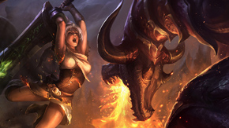
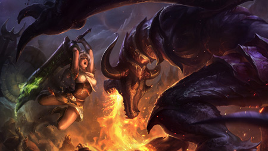

| ¿Qué es League of Legends? |

Comandos de chat
El secreto para triunfar en League of Legends es la comunicación y el trabajo en equipo. Usa estos comandos de chat para comunicarte con tus compañeros invocadores.
|
| Código del Invocador |
| Cómo Interactuar con Otros Jugadores |
| Comandos de Chat |
|
|
| Interacción entre jugadores |

|
Cómo abrir el chat
Al presionar Enter se abre la consola del chat. Al escribir en esta ventana enviarás mensajes a los demás invocadores de la partida. Si usas Enviar a equipo, podrás hablar con los jugadores aliados sin que el enemigo sepa qué estás comentando. Si usas Enviar a todos, tus pensamientos llegarán a todos los jugadores de la partida que tengan activado Todos los chats en el menú de Opciones. Por defecto, al presionar Enter una segunda vez, se envía el mensaje al equipo. Si la consola del chat está vacía, Enter servirá para cerrarla.
|
Los mensajes privados
Los mensajes privados, o susurros, son mensajes que se envían únicamente a un invocador determinado. Escribe /susurro o /whisper, seguido del nombre de invocador del jugador y, después, el mensaje que quieras enviar.
/susurro PanchoPanther La Raposa de Nueve Colas saltó sobre el desprevenido yordle.
Si escribes /responder o /reply en la ventana de chat, se enviará el mensaje automáticamente al último invocador que te susurró. El invocador tiene que estar en tu lista de amigos para recibir tus mensajes privados.
|
Cómo silenciar o ignorar jugadores
Por diversos motivos, puede que llegue un momento en el que no quieras recibir más mensajes de otro invocador. Para ello, mantén presionado Tab para abrir la tabla de puntuaciones y haz clic en el botón Silenciar que aparece junto al invocador que quieres silenciar.
También puedes escribir /silenciar o /mute seguido del nombre de invocador del jugador en la ventana de chat. Al repetir este proceso se volverá a recibir mensajes.
|
|
| Gestos |
|

Para esos momentos en los que las palabras no son suficientes, cada campeón dispone de un completo arsenal de gestos que te ayudará a expresarte en los Campos de la Justicia. Si escribes /chiste o /joke, /bailar o /dance, /provocar o /taunt, /risa o /laugh, en la ventana del chat, harás que tu campeón realice en el juego la acción asociada. Estos gestos pueden también asignarse a teclas de acceso rápido en el menú de Opciones para poder usarlos en el momento adecuado durante una partida.
|